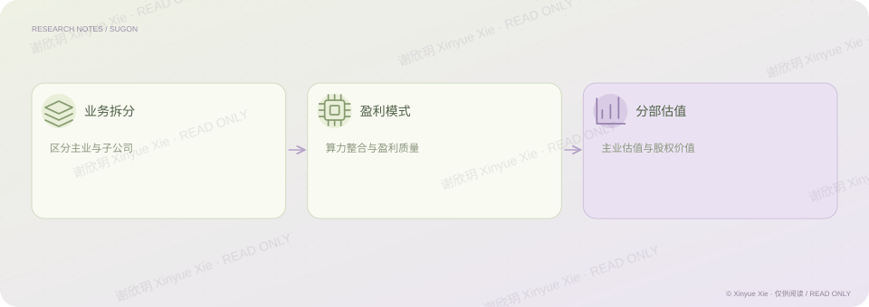

中信证券 · 公司研究
中科曙光：业务拆分与估值
不同业务，为什么需要分别估值？
PROJECT NOTES / THE BIG PICTURE
研究思路

01核心判断
在中科曙光研究中，我采用分部估值的思路，将子公司价值与主业经营价值分别讨论，再形成整体判断。研究关注全栈自主可控能力与算力整合模式如何影响盈利质量，并在当时的估值框架下对主业采用 29 倍市盈率。原研究认为这一整合模式的价值尚未被充分反映；分开讨论各项业务，是为了让公司判断与估值依据之间的关系更清楚。
02分析过程
识别主业与子公司的业务边界和权益关系。 采用分部估值，将子公司与主业经营价值分别讨论。 解释当时主业估值倍数与商业判断之间的关系。
03研究时点与估值口径
原研究采用分部估值，对子公司单独估值，主业给予 29 倍市盈率，关注全栈自主可控与约 30% 毛利率的算力整合模式。上述口径用于说明当时的研究思路。
相关经历公司研究作品
理解商业
从业务模式理解盈利，而后讨论公司价值。
建立模型
区分主业和子公司价值，采用分部估值。
谢欣玥 Xinyue Xie · 研究作品仅供在线阅读
← 返回全部作品